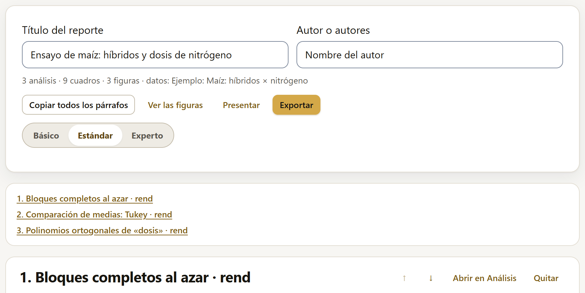
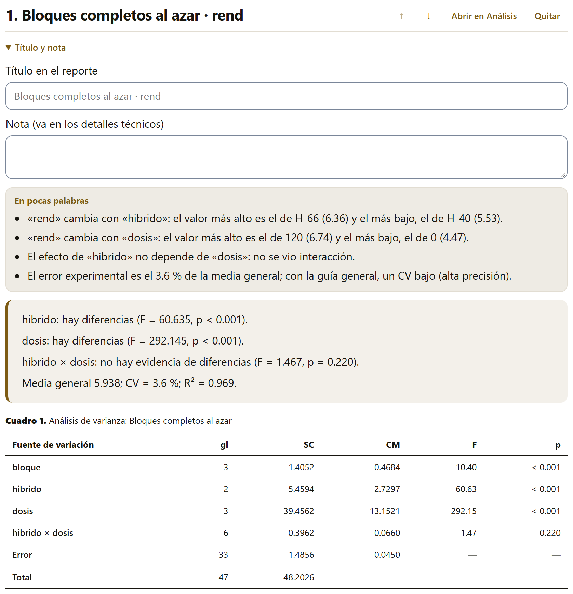
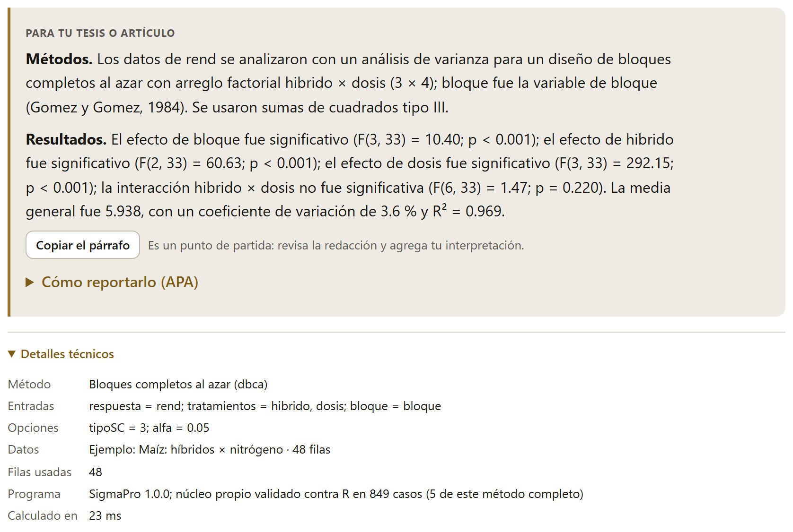

Cada análisis que vale la pena conservar va al reporte, donde se junta con los demás en orden, con los cuadros y las figuras numerados de corrido, sus supuestos, un párrafo para la tesis o el artículo, los detalles técnicos y el código R. El reporte no guarda resultados fijos: guarda los pedidos, y se recalcula con los datos que haya, así que corregir un dato corrige todo el reporte.
En Explorar y en Análisis, cada resultado trae en su cabecera, a la derecha de ⓘ ¿Qué es este análisis?, el botón Agregar al reporte. Al pulsarlo, un aviso confirma cuántos análisis lleva el reporte («Agregado al reporte (3 análisis). Míralo en el bloque Resultados.») y el botón cambia a En el reporte ✓; si se pulsa de nuevo, lleva al bloque Resultados en lugar de repetir el análisis.
Lo que se agrega es el pedido: el método, las variables con su papel y las opciones. Si después se cambia una opción (otra prueba de comparación, otro nivel de confianza), es otro pedido: el botón vuelve a decir Agregar al reporte y, si se pulsa, los dos quedan en el reporte.
Con el reporte vacío, el bloque ofrece ir a Análisis o a Explorar, o Abrir un proyecto .labg: un proyecto guardado trae los datos y el reporte completo (sección 7.5).

Cada análisis ocupa una tarjeta con su número y su título (el método y la respuesta: «Bloques completos al azar · rend»). La barra de la derecha tiene cuatro botones:
| Acción | Qué hace |
|---|---|
| ↑ y ↓ | Suben o bajan el análisis en el reporte; los cuadros y las figuras se vuelven a numerar. |
| Abrir en Análisis | En los análisis que vienen del bloque Análisis: lleva el pedido a ese bloque con sus variables y sus opciones y lo vuelve a calcular, para revisarlo o cambiarlo. Lo que se cambie ahí es un pedido nuevo: se agrega al reporte y el anterior se quita si ya no sirve. |
| Abrir en Explorar | En los resúmenes que vienen de Explorar, el mismo botón lleva a ese bloque, pero no vuelve a poner las variables: un aviso recuerda que el resumen se ajusta ahí y se agrega de nuevo. |
| Quitar | Lo saca del reporte. Ctrl+Z no lo regresa: se vuelve a agregar desde su bloque. |

Debajo de la barra, Título y nota se despliega para cambiar el título con que el análisis aparece en el reporte (el propuesto queda de guía, en gris) y escribir una nota, que va en los detalles técnicos: de dónde salieron los datos, qué se quitó, qué se decidió y por qué.
Luego viene lo mismo que en el bloque de origen, en este orden:
Cada análisis trae, en la sección Para tu tesis o artículo, un párrafo de Métodos y uno de Resultados redactados con sus números y con la cita del método cuando la hay. Son un punto de partida: la app lo dice al lado del botón, y conviene revisar la redacción y agregar la interpretación agronómica.

Copiar el párrafo copia los dos párrafos de un análisis. Copiar todos los párrafos, en la cabecera, junta los de todo el reporte en un texto con dos apartados: Métodos, con el de cada análisis y al final una oración que cita SigmaPro y R con sus versiones y el número de casos de la validación (si algún análisis corrió en el motor R, otra oración lo dice, con la versión de R que se usó dentro del navegador); y Resultados, con el de cada análisis numerado. Con el maíz, los resultados de los dos primeros análisis quedan así:
1. El efecto de bloque fue significativo (F(3, 33) = 10.40; p < 0.001); el efecto de hibrido fue significativo (F(2, 33) = 60.63; p < 0.001); el efecto de dosis fue significativo (F(3, 33) = 292.15; p < 0.001); la interacción hibrido × dosis no fue significativa (F(6, 33) = 1.47; p = 0.220). La media general fue 5.938, con un coeficiente de variación de 3.6 % y R² = 0.969.
2. Las medias, de mayor a menor, fueron H-66 (6.359 a), H-52 (5.922 b) y H-40 (5.533 c); medias con una letra en común no difieren.
Los párrafos usan los nombres de las columnas tal como están en la tabla («rend», «hibrido»): conviene cambiarlos por los nombres completos al pegarlos, o ponerle a las columnas nombres claros desde el bloque Datos (sección 2.7). Las referencias que citan los párrafos van completas en el reporte exportado.
Los párrafos, como los cuadros, salen en el idioma de la interfaz: con el selector en EN (sección I.5) se escriben y se copian en inglés, con las mismas cifras.
Al final de cada análisis, dos secciones plegadas guardan lo necesario para que otra persona pueda repetirlo.
Los Detalles técnicos (figura 5.3) dicen el método con su nombre interno; las entradas (qué columna hizo cada papel); todas las opciones, también las que se dejaron como venían; los datos (su origen, el número de filas y el filtro, si había uno); las filas que de verdad entraron al cálculo; el programa: la versión de SigmaPro, cuántos casos de la validación contra R tiene la app y cuántos de ellos son de ese método (si corrió en el motor R, las versiones de webR, de R y de sus paquetes); el tiempo de cálculo; y la nota, si se escribió una.
El Código R equivalente es el mismo de la sección 4.5: un guion que, con los datos exportados, da en R los mismos números. Copiar el código lo copia. El proyecto .labg (sección 7.5) junta el código de todo el reporte en un solo guion, con los datos.
Como el reporte guarda pedidos y no resultados, cada análisis se calcula con los datos actuales cada vez que se muestra o se exporta.
El reporte, con los datos, se guarda solo en el navegador mientras se trabaja (sección 7.6) y se puede guardar en un proyecto .labg para llevarlo a otra computadora o compartirlo (sección 7.5).